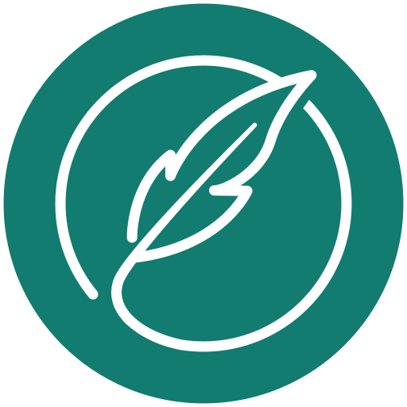

Read & navigate
Custom off-thread render pipeline with an LRU cache, so even a 4000-page document opens instantly. Tabbed workspace, thumbnails, an editable outline, live find, and an immersive reading mode with native light/dark theming.

Feather PDFLight on the system, full-featured on PDF.
An open-source, native PDF application for Linux, aiming at Adobe Acrobat-class capability without a web view. It wears Acrobat's bones (a tabbed workspace, a per-document command toolbar, a contextual Tools pane) with a quieter, modern GNOME skin.
Feather doesn't reinvent a PDF engine. It orchestrates the best open-source libraries behind a single, coherent interface, and deliberately avoids in-process AGPL libraries to stay GPLv3.
Custom off-thread render pipeline with an LRU cache, so even a 4000-page document opens instantly. Tabbed workspace, thumbnails, an editable outline, live find, and an immersive reading mode with native light/dark theming.
Rotate, delete, and drag-to-reorder. Extract, insert, and crop page ranges. Merge and split documents. Edit the bookmark tree and document properties.
Highlight, underline, strikeout, notes, freehand ink, shapes, lines, arrows, and text boxes. Stamps (Approved / Draft / Confidential), measure tools, and region snapshots.
Fill existing forms and author new fields (text, checkbox, dropdown, radio, and buttons) with drag-to-place. Auto-detect form fields, add validation, and import/export form data as XFDF.
AES-256 encryption with permissions, true content redaction, pattern-based find and redact, and a sanitizer that strips metadata, embedded files, and scripts.
Digital signatures with a text or graphical appearance, PKCS#11 hardware tokens, RFC 3161 timestamps, and long-term validation (LTV / PAdES-LTA). More →
Scan straight to PDF from any SANE device, with optional OCR in the same pass. Tesseract OCR with deskew, despeckle, binarize pre-processing and automatic language detection. Read-aloud via speech-dispatcher.
Office and image conversion via LibreOffice. Export back to Word/ODT/RTF/text, render pages to PNG/JPEG/TIFF, extract embedded images, and convert RGB → CMYK. Optimize and flatten. PDF/A with preflight.
A real command-line interface, a batch / action wizard, and a watch-folder daemon. Desktop integration: file-manager thumbnails, right-click actions, and a “Print to Feather PDF” virtual printer.
A signature is only as trustworthy as the certificate behind it, and certificates expire. Feather embeds the proof a verifier needs directly into the document, so it keeps validating long after the certificate is gone.
/DSS./DocTimeStamp covering the whole document, renewing trust over time.Render with one library, reason with another, restructure with a third.